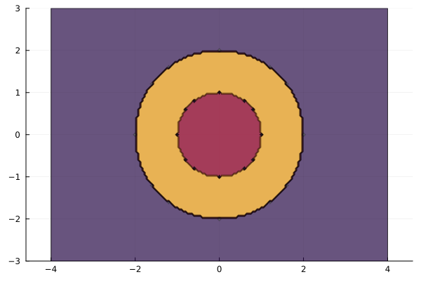

HypersurfaceRegions.jl
We present a Julia package for computing the regions (i.e., connected components) in the complement of an arrangement of real hypersurfaces .
Our input consists of $k$ polynomials in $n$ variables. The output is a list of all regions of the complement of the zero set of these polynomials.
For each region $C$ we report the Euler characteristic and well-chosen sample points. The list is grouped according to sign vectors $\sigma \in \{-1,+1 \}^k$, where $\sigma_i$ is the sign of the $i$th polynomial on $C$. For hyperplane arrangements, each region is uniquely characterized by its sign vector. However, in our situation, each sign vector $\sigma$ typically corresponds to multiple connected components.
Example: two concentric circles
Let us consider two concentric circles. For instance, we could take the two circles $f_1 = x^2 + y^2 - 1=0$ and $f_2=x^2 + y^2 - 4=0$ centered at the origin. To compute the regions of $\mathcal{U} = \{ u \in \mathbb{R}^2 \mid f_1(u) \cdot f_2(u) \not= 0 \}$ we can use the following code:
julia> using HypersurfaceRegions
julia> @var x y;
julia> f_1 = x^2 + y^2 - 1;
julia> f_2 = x^2 + y^2 - 4;
julia> f = [f_1; f_2]
julia> C = regions(f)
RegionsResult with 3 regions:
===============================
9 complex critical points
5 real critical points
╭──────────────┬─────────────────────────────────╮
│ sign pattern │ regions │
├──────────────┼─────────────────────────────────┤
│ + + │ number = 1 │
│ │ χ = 0, μ = [1, 1, 0], unbounded │
│ - - │ number = 1 │
│ │ χ = 1, μ = [1, 0, 0], bounded │
│ + - │ number = 1 │
│ │ χ = 0, μ = [1, 1, 0], bounded │
╰──────────────┴─────────────────────────────────╯The output shows that $\mathcal U$ has three regions. The first region has sign pattern $++$. This means that, on this region, both $f_1$ and $f_2$ are positive. On the second region, both $f_1$ and $f_2$ are negative, so it is the contractible region in the middle. The software correctly reports that this region has Euler characteristic 1. The other two regions each have one hole and thus have Euler characteristic 0.
Let us visualize the three regions. We use the Plots.jl package. For this, we define a function that spits out a color corresponding to a region given a point.
function region_col(x, y)
Ci = membership(C, [x; y]; warning = false)
if !isnothing(Ci)
return number(Ci)
else
return nothing
end
end
u = -4:0.05:4; v = -3:0.05:3;
X = repeat(reshape(u, 1, :), length(v), 1);
Y = repeat(v, 1, length(u));
Z = map(region_col, X, Y);
using Plots
contour(u, v, Z, fill = true, alpha = 0.25,
legend = false,
aspect_ratio = :equal)This produces the following picture:

Example: 3 random polynomials
We can set up a random example as follows.
using HypersurfaceRegions
@var v[1:3];
f = [rand_poly(Float64, v, d) for d in [2, 3, 3]];
C = regions(f)Here, f consists of 3 random polynomials in v. The degrees of these polynomials are [2, 3, 3]. The coefficients are chosen from a Gaussian distribution.
At a certain number of rows, the output of C in terminal is cropped. To avoid this, we can use the following command.
show(C; crop = false)Documentation: Output
HypersurfaceRegions.RegionsResult — TypeRegionsResultA struct that collects all regions in the complement of a hypersurface arragement.
HypersurfaceRegions.Region — TypeRegionA struct that contains all information about a region.
Documentation: Main functions
HypersurfaceRegions.regions — Functionregions(C::RegionsResult)Returns the vector of regions in C.
regions(f::Vector{Expression})
regions(f::System)Input a list of hypersurfaces 'f = [f1,...fk]'. Outputs the regions in the complement of the hypersurface arrangement, whether they are bounded or not, their sign patterns, Euler characteristic and the indices of the critical points in each region.
Options:
δ::Float64 = 1e-4: Parameter that defines the strip around infinity.target_parameters: Specify parameters of the Systemf(if its has any).show_progress = true: if true, prints the progress of the computation to the terminal.projective_fusion = true: iftrue, the algorithm computes which of the regions are fused at infinity.s: exponents of the Morse functionf_1^(s_1) * ... * f_k^(s_k) * q^(s_k+1). Here,sis a list of integers[s_1, ..., s_k, s_{k+1}]such thats_1, ..., s_k>0, s_{k+1}<0and2 s_{k+1} > s_1 deg(f_1) + ... + s_k deg(f_k).epsilon = 1e-6: how close from each critical point do we do the path tracking.reltol = 1e-6,abstol = 1e-9: parameters for the accuracy of the ODE solver.monodromy_options = MonodromyOptions(max_loops_no_progress = 25): pass options for monodromy.start_pair_using_newton::Bool = false: if true, the algorithm tries to compute a start pair for monodromy by using Newton's methods. Can reduce the number of critical points, but is less stable.
Example
using HypersurfaceRegions
@var x y
f = [x^2 + y^2 - 1; x^2 + y^2 - 4];
regions(f)Example with options
regions(f; δ = 1e-4,
monodromy_options = MonodromyOptions(max_loops_no_progress = 20))HypersurfaceRegions.affine_regions — Functionaffine_regions(f::Vector{Expression})
affine_regions(f::System)Input a list of affine hypersurfaces 'f = [f1,...fk]'. Outputs the regions in the complement of the hypersurface arrangement, their sign patterns, Euler characteristic and the indices of the critical points in each region. Accepts the same options as regions.
Example
using HypersurfaceRegions
@var x y
f = [x^2 + y^2 - 1; x^2 + y^2 - 4];
affine_regions(f)HypersurfaceRegions.projective_regions — Functionprojective_regions(C::RegionsResult)Returns a vector of vectors. The entries of the vectors are those regions in C, which are fused in projective space.
The following code will return a vector of vectors of type Region:
using HypersurfaceRegions
@var x y
f = [x^2 + y^2 - 1; x^2 + y^2 - 4];
C = regions(f)
p = projective_regions(C)Documentation: Helper functions
Functions to call on Region.
HypersurfaceRegions.χ — Functionχ(C::Region)Returns the Euler characteristic.
HypersurfaceRegions.μ — Functionμ(C::Region)Returns the index vector.
HypersurfaceRegions.critical_points — Functioncritical_points(C::Region)Returns the critical points in C.
HypersurfaceRegions.is_bounded — Functionis_bounded(C::Region)Returns a boolean that is true, if C is bounded.
HypersurfaceRegions.is_unbounded — Functionis_unbounded(C::Region)Returns a boolean that is true, if C is undecided.
HypersurfaceRegions.is_undecided — Functionis_undecided(C::Region)Returns a boolean that is true, if the algorithm could not decided whether C is bounded or not.
HypersurfaceRegions.number — Functionnumber(C::Region)Each Region in a RegionsResult is assigned a number.
Functions to call on RegionsResult.
HypersurfaceRegions.nregions — Functionnregions(C::RegionsResult)Returns the number of regions in F.
HypersurfaceRegions.nbounded — Functionnbounded(C::RegionsResult)Returns the number of (weakly) bounded regions in C.
HypersurfaceRegions.nunbounded — Functionnunbounded(C::RegionsResult)Returns the number of unbounded regions in C.
HypersurfaceRegions.nundecided — Functionnundecided(C::RegionsResult)Returns the number of regions in C, where bounded or unbounded could not be decided.
HypersurfaceRegions.bounded — Functionbounded(C::RegionsResult)Returns the (weakly) bounded regions in C.
HypersurfaceRegions.unbounded — Functionunbounded(C::RegionsResult)Returns the unbounded regions in C.
HypersurfaceRegions.undecided — Functionundecided(C::RegionsResult)Returns the number of regions in C, where bounded or unbounded could not be decided.
HypersurfaceRegions.euler_characteristics — Functioneuler_characteristics(C::RegionsResult)Returns the Euler characteristics of the regions in C.
HypersurfaceRegions.index_vectors — Functioneuler_characteristics(C::RegionsResult)Returns the index vectors of the regions in C.
HypersurfaceRegions.ncritical_complex — Functionncritical_complex(C::RegionsResult)Returns the number of complex critical points of the Morse function in C.
HypersurfaceRegions.ncritical_real — Functionncritical_real(C::RegionsResult)Returns the number of real critical points of the Morse function in C.
HypersurfaceRegions.g — Functiong(C::RegionsResult)Returns the Morse function in C.
HypersurfaceRegions.variables — Functionvariables(C::RegionsResult)Returns the order of variables.